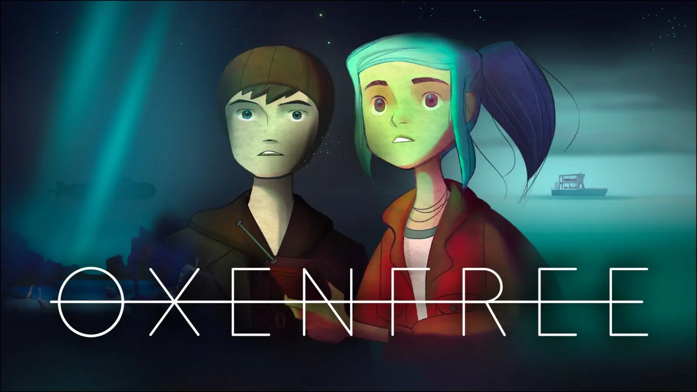

Enredo:
Oxenfree é um marco no gênero de aventura narrativa, aclamado por sua abordagem inovadora ao diálogo em tempo real e uma atmosfera de thriller sobrenatural que mistura elementos de filmes de terror adolescentes com mistérios de viagem no tempo. Desenvolvido pela Night School Studio, o jogo é notável por contar uma história profunda e atmosférica sem o uso de cutscenes ou interrupções.
A Narrativa Central e o Mistério da Ilha Edwards:
A história de Oxenfree gira em torno de Alex e um pequeno grupo de amigos que decidem passar uma noite em uma praia na Ilha Edwards, um local com um passado militar misterioso, que já abrigou uma base naval dos EUA durante a Segunda Guerra Mundial e uma estação de rádio secreta. A ilha serve como um pano de fundo perfeito para o horror que se desenrola.
- O Incidente Sobrenatural: O ponto de virada ocorre quando o grupo, por sugestão do amigo Ren, sintoniza um rádio portátil em frequências incomuns dentro de uma caverna. Esse ato acidental abre uma fenda temporal, liberando os "Remanescentes", entidades fantasmagóricas presas entre dimensões.
- Manipulação do Tempo e Realidade: Essas entidades não são apenas espectros assustadores; elas possuem os adolescentes, distorcem a percepção do tempo e forçam os personagens a reviver memórias traumáticas e loops temporais. A luta para entender o que está acontecendo e como reverter a situação é o motor da trama.
- Temas Maduros: Além do suspense, o jogo é uma exploração profunda de temas como o luto e o trauma. A história de fundo de Alex e seu meio-irmão Jonas, que estão lidando com a perda recente de um irmão em comum, é central. A ilha força os personagens a confrontar não apenas fantasmas literais, mas também seus próprios demônios internos, medos e arrependimentos.
Jogabilidade Revolucionária: O Diálogo Orgânico:
O que realmente diferencia Oxenfree de outros jogos narrativos é o seu sistema de interação e diálogo, que elimina a interface tradicional de jogos de aventura para uma experiência mais imersiva e cinematográfica:
- Sistema de Conversação Dinâmico: Ao invés de longas cutscenes ou menus de diálogo tradicionais, as opções de diálogo aparecem como balões de fala sobre a cabeça de Alex enquanto ela explora o ambiente. Isso permite que a conversa flua naturalmente, e o jogador pode escolher responder imediatamente, esperar, ou permanecer em silêncio — o silêncio também é uma escolha com consequências.
- Exploração e Mecânica Central: A exploração da ilha é livre, com um sistema de point-and-click em ambientes 2.5D belamente ilustrados. A mecânica central envolve o uso de um rádio portátil para sintonizar frequências misteriosas. Este rádio é usado para se comunicar com os fantasmas, interagir com objetos anômalos e resolver quebra-cabeças ambientais, funcionando como uma ferramenta essencial para desvendar os segredos da ilha.
- Narrativa e Escolhas: O destino dos personagens é maleável. As escolhas feitas durante o jogo afetam os relacionamentos, determinam quem sobrevive, quem pode ser aprisionado em um loop temporal e qual dos múltiplos finais o jogador alcançará. A profundidade da narrativa e a validade de rejogar para ver diferentes ramificações são pontos altos do título.
Estilo Visual e Áudio Imersivo
Oxenfree é frequentemente elogiado por sua apresentação atmosférica:
- Áudio e Trilha Sonora: A trilha sonora synth-pop assombrosa, composta por Andrew Rohrmann (scntfc), é crucial para a atmosfera, combinando perfeitamente com a estética dos anos 80/90 do jogo. O design de áudio, com chiados de rádio e vozes distorcidas, cria uma tensão constante e uma sensação de pavor.
- Estilo Visual Distinto: O jogo utiliza fundos pictóricos detalhados e uma perspectiva de câmera distante que enfatiza a vastidão e o isolamento da ilha, dando a sensação de que os personagens são pequenos em face de forças maiores e desconhecidas.
Plataformas e Acesso:
Lançado originalmente em 2016, Oxenfree teve um alcance amplo:
- Disponibilidade: Microsoft Windows, OS X, Xbox One, PlayStation 4, Linux, iOS, Android e Nintendo Switch.
- Netflix: Através de uma parceria, o jogo original e sua sequência, Oxenfree II: Lost Signals, estão acessíveis para assinantes da Netflix em dispositivos móveis, sem custos adicionais ou anúncios.
Legado e Impacto
O impacto de Oxenfree na indústria de jogos é significativo, principalmente por:
- Pioneirismo na Narrativa de Diálogo: O jogo é frequentemente citado como um exemplo mestre de como integrar o diálogo diretamente na jogabilidade em tempo real, influenciando subsequentemente muitos outros jogos narrativos independentes. A ausência de interrupções para o diálogo criou um novo padrão de imersão.
- Atenção ao Rádio como Ferramenta Narrativa: A mecânica do rádio foi uma inovação, transformando uma ferramenta de áudio em um dispositivo de interação com o mundo sobrenatural, algo que a Night School Studio continuaria a refinar.
- Reconhecimento da Crítica e Prêmios: Oxenfree ganhou prêmios e indicações por sua excelência em narrativa e direção de arte, solidificando a Night School Studio como um estúdio a ser observado na área de jogos focados em histórias maduras e atmosféricas. Seu sucesso abriu caminho para a sequência, lançada em 2023, mantendo vivo o universo e o estilo únicos do jogo original.